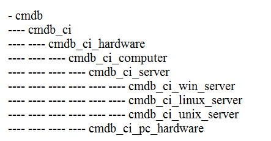

Answers verified with AI using ServiceNow documentation. Exercise your own judgement.
Question 1

Given the class structure shown below, which types of CIs will be included in a report run against the cmdb_ci_computer table?
A. Just CIs defined directly in cmdb_ci_computer
B. CIs defined directly in cmdb_ci_computer and all parent classes
C. CIs defined directly in cmdb_ci_computer and all child classes
Question 2
Which field from the configuration item will automatically populate in the Assignment group field of an incident record?
A. Managed by
B. Support group
C. Approval group
D. Change group
Question 3
Which of the following are defined for a given change model? (Choose three.)
A. Phase transitions
B. State model
C. State transition conditions
D. Phase model
E. State transitions
Question 4
When is a change task for Post Implementation Review created for an unauthorized change?
A. When the change request moves to Close
B. When a change manager accepts the change
C. When the change request moves to a state of Review
D. When the change request moves to a state of Assess
Question 5
Which should be used to explore the entire hierarchy and table definitions of the Configuration Management Database Classes?
A. Reports
B. CI Class Manager
C. Application Menus
D. Dependency View
Question 6
Which of the following cannot be defined or set through a Catalog UI Policy?
A. Setting a variable to mandatory
B. Apply a requirement to all form views
C. Setting a catalog category to visible
D. Setting a variable to read-only
Question 7
Which type of catalog item should be used to create an incident record from the portal?
A. Incident Template
B. Request Item
C. Order Guide
D. Record Producer
Question 8
Which incident management roles are activated by installing the ITSM Roles plugin (com.snc.itsm.roles)? (Choose two.)
A. sn_incident_read
B. itsm_incident_read
C. incident_manager
D. sn_incident_write
E. itsm_incident_write
Question 9
A customer requests that when the Service Desk agent clicks on the information icon for the Caller's name, the quick view frame shows only the following fields:
User name -
Manager name -
Email Address -
Employee ID - How would you modify the quick view frame?
A. Update the sys_popup view for the user table
B. Update the sys_quick view for the caller table
C. Update the sys_popup view for the caller table
D. Update the sys_quick view for the user table
Question 10
Your customer has built a mature knowledge base, with articles targeted to internal audiences -which are technical. Other articles are written for end users, with simple instructions. From the Incident form, the agents would like to be able to identify which articles are visible to the callers What feature would you use, to satisfy this requirement?
A. Internal/External Highlighting
B. Search as User
C. Show User Viewable
D. User Only View
Question 11
Your customer is using the baseline Create Incident Catalog Item and would like to add a few additional input fields. How should you update the catalog item?
A. Edit in Catalog Item Designer
B. Edit in Item Designer
C. Edit in Catalog Builder
D. Edit in Form Designer
Question 12
Your customer is complaining that Service Desk users keep accidentally assigning Incidents to the Network CAB, instead of Network Support You have confirmed that: The Network Support group record has the Group types: Incident and Change The Network CAB group record has the Group type: Change What could you do on the incident form, for the Assignment Group field, to resolve this issue?
A. Add a UI action to hide the Network CAB group from the list
B. Add a UI action to provide an error message if the Network CAB group is selected
C. Add Dictionary Override to specify the Incident group Reference Qualifier
D. Modify the choice list to include only the appropriate group types
Question 13
Which Agent workspace feature gives agents automatic search results that show possible solutions for records they open?
A. Chat Bot
B. Related Search Results
C. Knowledge Bases
D. Intelligent Agent
E. Agent Assist
Question 14
Which capability provides visibility to data joined between multiple tables?
A. Database Views
B. Metric Tables
C. Published Reports
D. Custom Tables
E. Breakdown Sources
Question 15
What tools are available to the assignee to help resolve an Incident? (Choose two.)
A. Knowledge Articles
B. Workarounds
C. CI Class Manager
D. Incident Overview Dashboard
E. Enterprise CMDB Dashboard
Question 16
When using Inbound Email Actions, what happens if an email is received which has no watermark or reference number?
A. New incident created from the message
B. New interaction is created from the message
C. Email is rejected and auto-reply sent to sender
D. New case is created from the message
Question 17
Under what circumstances, should you use the Communicate workaround Related Link on the Problem record?
A. The workaround is helpful information for the Callers on the Problem's related Incidents (open)
B. The workaround should be published to a knowledge article, visible from the portal
C. The workaround is helpful information for the members of the Problem's Assignment Group
D. The workaround is helpful information for the members of the Problem's Work notes list
Question 18
Which interface is designed for tier 1 IT agents who solve internal or external customer issues?
A. ITSM Dashboard
B. IT Service Management Workspace (Agent Workspace)
C. ITIL Homepage
D. Incident Overview
Question 19
When using Agent assist in the Agent workspace, what are examples of possible solutions can be automatically searched and displayed? (Choose five.)
A. Runbook Actions
B. Knowledge
C. SQL Queries
D. Problems
E. Changes
F. Cases
G. Incidents
Question 20
Which module is a useful starting point for a manager to view current state operational information for Incident management?
A. CMDB Health Dashboard
B. Incident > Overview
C. Manager Workspace
D. Critical Incidents Map
Question 21
The Problem table is extended from what table?
A. Task
B. Major Incident
C. Outage
D. Problem Task
E. Incident
Question 22
The Problem Manager wants the Problem Coordinators to be able to Re-analyze a Completed Problem. Which module could they use to make this change?
A. Problem > Administration » Problem Properties
B. System UI > UI Action Groups
C. State Management > State Models
D. System UI > Form Actions
E. System UI > UI Actions
Question 23
Your Problem Manager has a structured problem management process, which includes a final review of the solution implemented and of the data regarding incident reduction. When a problem is resolved, after implementing a fix, they want the Post Fix Review task to be automatically created and assigned to the Problem assignee. What feature would you use to meet this requirement?
A. State Model
B. Workflow Dashboard
C. Action Modeler
D. Task Creator
E. Flow Designer
Question 24
Your customer needs help defining Category values for the Problem records. What approach should you suggest? (Choose two.)
A. Re-use existing categories from legacy systems
B. Define categories based on the customer’s CMDB classes
C. Re-use existing categories from incident management
D. Define categories based on ITIL problem taxonomy
Question 25
When a user clicks on the Communicate fix UI action on the Problem form, what happens?
A. Fix is written to the Comments field on any Incident associated with the problem, which is On Hold, Awaiting Problem
B. Fix is written to the Work notes field on any Incident associated with the problem, which is Active
C. Fix is written to the Comments field on any Incident associated with the problem, which is Active
D. Fix is written to a draft Knowledge article
Question 26
Users with which role can Communicate a workaround or fix? (Choose two.)
A. itil_admin
B. problem_coordinator
C. problem_task_analyst
D. problem_admin
Question 27
When a user clicks on the Communicate workaround UI action on the Problem form, what happens?
A. Workaround is written to the Comments field on any open Incident associated with the problem
B. Workaround is written to the Workaround field on any incident associated with the problem
C. Workaround is written to a draft Knowledge article
D. Workaround is written to the Work notes field on any open Incident associated with the problem
Question 28
A tester wants to submit a bug report, because they are not able to see the Communicate Fix link under the Related Links on the Problem form. What do you recommend that they confirm, before submitting the bug report? (Choose two.)
A. Tester is impersonating a user with communications.manager role
B. Tester is impersonating the assignee, which has the problem_coordinator role
C. Tester is impersonating a user with problem_coordinator role
D. The Fix notes field is filled in and saved
Question 29
Problem and Problem Task records, move automatically from New to Assess states, when which fields are filled? (Choose two.)
A. Short Descriptor
B. State
C. Assigned to
D. Configuration Item
Question 30
On a Change Approval Definition record, what does the ‘wait for’ condition define?
A. Whether the change approval is sent to an individual user or a group
B. The state the change must be in before the approval notifications can be sent
C. The number or percentage of users from the approval group that must approve the change
D. The fields that must be populated before the approval can be requested
Question 31
In what table are Change records stored?
A. Change [change_task]
B. Change Request [rfc]
C. Change Request [change_request]
D. Change [change]
E. Change [task_change]
Question 32
Risk is configured by default, to calculate Risk = High for a change that is scheduled with only 3 days lead time. Your customer’s change policy requires that changes be requested with 5 days lead time. How would you satisfy this requirement?
A. Update the Risk Property for Insufficient lead time
B. Update the Risk Assessment Matrix for Insufficient lead time
C. Update the Calculate Risk UI Action
D. Update the Risk Matrix for insufficient lead time
E. Update the Risk Condition for Insufficient lead time
Question 33
How are Releases related to Projects?
A. Project tasks and Release tasks are interchangeable
B. Projects can be part of one or more releases
C. Project features are components of a release
D. Projects need to be completed before releases can be defined
E. Projects are used to do root cause analysis for releases
Question 34
What baseline Change Flows support the baseline Normal Change model?
A. Change - Normal - Assess, Change - Normal - Authorize, Change - Normal - Implement Change - Implementation tasks
B. Change - Normal - New, Change - Normal - Review, Change - Normal - Close, Change - Implementation tasks
C. Change - Normal - New, Change - Normal - Assess, Change - Normal - Implement, Change - Implementation tasks
D. Change - Normal - Assess, Change - Normal - Authorize, Change - Normal - Close, Change - Implementation tasks
Question 35
Which of the following Change Task Types are available by default? (Choose three.)
A. Planning
B. Testing
C. Review
D. Deployment
E. Verification
Question 36
What is the Business Rule that triggers automatic group assignment on Incident, Problem or Change requests?
A. Populate Assignment Group based on CI/SO
B. Auto-populate ITSM Assignment Groups
C. ITSM Assignment Lookup Rule
D. Automatic Assignment for ITSM
Question 37
In the CAB workbench, what are some ways the CAB manager can identify the Change requests to be added to a particular meeting agenda? (Choose two.)
A. Change requests meeting different conditions, like Risk level or Type
B. Change requests planned within a certain date range
C. Use any of the options on the Agenda Criteria Tab
D. Change requests for a certain Change Flow Definition
Question 38
A change user complains that with the new Preapproved tab, they have to search through many options to find the Reboot Windows Server change. Since they use this change several times per day, it is inconvenient. What should you suggest to make it easier for the change user?
A. Use the Pin feature
B. Make a Favorite
C. Use the keyword search
D. Drag the change tile to the Navigation pane
Question 39
Roles control which users can perform which actions on a change record. What are actions, which cannot be performed by anyone, even an administrator? (Choose two.)
A. Update Change Type on an existing change record
B. Delete a Change record
C. Delete a Standard Change Template
D. Delete CAB Definition
Question 40
In the baseline Change - Normal model how can Change Tasks be added? (Choose two.)
A. Automatically via the Change - Implementation subflow
B. Manually by the user during New, Assess, and Authorized states
C. Automatically depending on the category selected on the Change Request
D. Manually by the user during all states, except Closed or Canceled
Question 41
In the baseline Change - Normal model, when the Change request goes to the Review state, what happens to the implementation and testing tasks, if they have not been closed.
A. They are automatically canceled
B. They are automatically closed
C. They are automatically assigned to the Change assignee and closed
D. An error displays, requiring that the Tasks be closed before moving to Review
Question 42
On the Unauthorized Change Properties module what can you configure? (Choose two.)
A. Enable/Disable creation of Unauthorized changes
B. Maximum number of unauthorized change records for a CI
C. Unauthorized Change Dashboard
D. CI classes to monitor
Question 43
How do you describe the relationship between a Knowledge article and a Knowledge base category?
A. Articles can only be published to one category
B. Articles must be published to at least one category
C. Articles must be approved by the selected category owner
D. Articles can be published to a category and subcategory
Question 44
What are the different ways a user can provide feedback on a knowledge article? (Choose four.)
A. 10 Star scale
B. Comment on Article
C. Helpful?
D. Flag Article
E. 5 Star scale
F. Pin Article
Question 45
When using the Knowledge - instant Retire workflow, how does the Valid to date enact a Knowledge article?
A. On Valid to date, article is automatically retired
B. On Valid to date, retire notification is sent to the Knowledge article author
C. On Valid to date, retire notification is sent to the Knowledge base owner
D. On Valid to date, the article is archived
Question 46
In the ServiceNow native platform, the service catalog can be accessed via the Self-Service > Service Catalog module. Your customer wants to make modifications to this home page, to add, remove and re-arrange the categories. Users with what roles can make these edits? (Choose two.)
A. catalog_admin
B. sc_catalog_admin
C. catalog_editor
D. sn_catalog_homepage_write
E. admin
Question 47
What would you use to create a New Hire Employee request which would allow you to order your workstation and company mobile?
A. Knowledge item
B. Record Producer
C. Catalog Item
D. Order Guide
E. Content Item
Question 48
Which tool allows process owners to use natural language to automate approvals, tasks, notifications and other record operations with little to no code?
A. Workflow Mapper
B. Workflow Manager
C. Flow Designer
D. Flow Dashboard
E. Process Designer
Question 49
What process is responsible for defining and managing the lifecycle of all catalog items, by producing and maintaining the services in the catalog and ensuring that a central, accurate, and consistent source of data is provided?
A. Service portfolio management
B. Catalog item management
C. Service mapping
D. Service catalog management
Question 50
Your customer needs different catalogs for: Human Resources - employee facing - for submitting requests to HR Customer - external customer facing - for ordering company products and services When these catalogs are created, in which table would the definition be stored?
A. Business Services Catalog [bs_catalog]
B. Catalog [sc_catalog]
C. Service Portfolio Catalog [sc_portfolio]
D. Service Offering Catalog [sn_offering]
Question 51
When creating a catalog, which field specifies who can edit, update, and delete catalogs, categories, and catalog items?
A. Manager
B. Contributors
C. Owner
D. Editors
Question 52
Which type of catalog item may be found in a Service Catalog?
A. Requested Items
B. Record Producers
C. Categories
D. Execution Plans
Question 53
Which of the following are users able to do when configuring stages in Flow Designer? (Choose two.)
A. Display the stages to the requester
B. Create any number of stages
C. Import a copy of a pre-defined stage set
D. Define the stage set in a subflow
Question 54
When creating a catalog, which field specifies who is able to create, modify, and publish items in the catalog?
A. Editors
B. Item Admins
C. Item Owners
D. Authors
Question 55
When defining catalog categories and subcategories, what are some good practices to follow? (Choose two.)
A. Align categories with CMDB classes where possible
B. Keep the number of top-level categories to 8-10
C. Remember that items can only be assigned to one category
D. Do not go to deep with subcategories: go only 1-2 levels deep
Question 56
In request fulfillment, approvals can be required before a request can be fulfilled. Your customer is worried about requests getting stuck in the process flow, if the approver is on extended absence from the office. What can you suggest to alleviate this concern? (Choose two.)
A. The approver can use the Delegate module to assign a person to approve on their behalf, while they are away from the office
B. The approver can set their approval notifications to forward to their personal email address
C. The approval can be defined as a group approval, where any member of the group can approve
D. The approver can set their approval notifications to auto-reply with “approved” in the subject line
Question 57
Released in Quebec, what tool enables you to delegate the creation and maintenance of common and simple use case Catalog Items to business users?
A. Catalog Wizard
B. Catalog Designer
C. Catalog Item Builder
D. Catalog Builder
Question 58
Request fulfillment relies on three record types, Requests, Requested Items, and Catalog Tasks. The lifecycle status of these records is reflected in a combination of state and stage fields. Which status field is set by the flow?
A. Stage on Requested item
B. Status on Request
C. State on Catalog Task
D. State on Requested Item
Question 59
Your implementation team has a new Business Analyst. They will be attending their first Service Catalog workshop and will be responsible for capturing notes and decisions from the workshop. What Now Create assets do you recommend they review, to prepare? (Choose two.)
A. Service Catalog and Request Mgmt - Workshop Preparation Guide
B. Service Catalog and Request Mgmt - Process Guide
C. IT Service Management - Typical Challenges and Remediation
D. ITSM - Business Outcomes and Corresponding KPIs
Question 60
Which role would give you access to the CI Class Manager?
A. ecmdb_admin
B. ecmdb
C. class_manager
D. sn_class_manager
Question 61
What module do you use to change the setting for the time between incident Resolution and Closure?
A. ITSM Properties
B. System Settings
C. Incident Settings
D. Incident Properties
E. Resolution Properties
Question 62
By default, when using Inbound actions, what happens if an email is received which has an Incident watermark?
A. Incident SLA clock is un-paused
B. Incident record is updated, per the action's script
C. Auto-reply sent to sender, recommending they use Portal chat
D. Incident record is re-set to state = attention required
Question 63
When using the Email Client, what is the difference between an Email Template and a Quick Message?
A. Email Templates are like forms that can be sent to the caller for completion; Quick Messages are primarily used by the Chat Bot
B. Email Template is defined and automatically applied when the email form launches; Quick Messages are defined and then can be manually applied by the user
C. Email Templates are included with ITSM; Quick Messages are new with Machine Learning
D. Email templates are defined by users with admin role; Quick Messages are defined by users with quick_message_admin role
Question 64
Your customer wants incidents to close automatically 7 days after the incident is resolved. How do you meet this requirement? (Choose two.)
A. Modify the Incident Lifecycle flow to trigger from the Resolved date instead of the Updated date
B. Update the incident_close UI action script
C. From the Incident Properties application, set Enable auto closure of incidents based on Resolution date to Yes
D. Modify the Incident Lifecycle flow to expire after 7 days
Question 65
What tools are available to the assignee to help resolve an Incident? (Choose two.)
A. Known Errors
B. Resolutions from similar incidents
C. CI Class Manager
D. Incident Overview Dashboard
E. Enterprise CMDB Dashboard
Question 66
Your customer wants to use the Service Catalog to generate task-based records for end-user inquiries. What Service Catalog capability can you use to generate these records?
A. Execution Plans
B. Content Items
C. Catalog Items
D. Record Producers
Question 67
Which type of catalog item may be found in a Service Catalog?
A. Requested Items
B. Order guides
C. Categories
D. Execution Plans
Question 68
From which table, is the Incident table extended?
A. Task [task]
B. Task [sn_task]
C. Ticket [ticket]
D. Work [sn_work]
Question 69
What optional Incident table is extended from the Task table?
A. Child Incident [incident_child]
B. Major Incident [major_incident]
C. Incident Task [incident task]
D. Parent Incident [incident_parent]
Question 70
Category and Subcategory values can be set manually on the Incident form. What are disadvantages of this approach? (Choose two.)
A. Too many options may confuse users and increase mis-categorization
B. Choices have no additional metadata to drive process
C. It is difficult to implement
D. It is not part of the baseline instance
Question 71
When using the baseline business rule, Populate Assignment Group based on CI/SO, what behavior would you expect on an Incident form? (Choose two.)
A. If selected CI does not have an Owner group, write the Support group from the Service Offering to the Assignment group field
B. If selected CI has a Support group, write that group to the Assignment group field
C. If selected CI has an Owner group, write that group to the Assignment group field
D. If selected CI does not have a Support group, write the Support group from the Service Offering to the Assignment group field
Question 72
On an incident record, where are the fields that appear on the caller lookup select box defined?
A. The Caller lookup field on the [user] table
B. The ref_ac_column attribute from the dictionary entry
C. The ref_contributions attribute on the caller lookup form
D. The form design of the caller lookup form
Question 73
Where do you enable the Search as feature for an incident?
A. incident.deflection system property
B. Incident Properties application
C. Related Search Results table configuration
D. Incident form design
Question 74
If the Assignment group is empty on an incident record, what happens when an agent that is a member of a single user groups clicks the Assign to me UI action?
A. The agent is prompted to select the Assignment group
B. The Assignment group field is populated with agent’s user group
C. An error is displayed indicating the Assignment group field must be populated before executing the Assign to me UI action
D. The Assignment group field remains empty
Question 75
A problem record is the Parent to what record?
A. Known Error
B. Workaround
C. Major Incident
D. Problem Task
E. Related Incidents
Question 76
When you create a problem from an incident, impact, urgency and priority are automatically populated, from the incident record. Your problem management process owner wants the problem manager to be responsible for assessing the impact and urgency on the problem, so they don't want the values from incident to be copied over. What module would you use to make this adjustment?
A. System Policy > Rules > Priority Lookup Rules
B. Problem > Administration > Problem Properties
C. ITSM > Administration > Properties
D. Incident > Administration > Incident Properties
Question 77
As of Quebec, Problem task records will move automatically from one state, to another state, provided the required fields are filled. What are those states?
A. Assess to Work in Progress
B. On Hold to Work in Progress
C. New to Assess
D. Draft to Assess
E. Work in Progress to Closed
Question 78
A new problem manager wants to know how to create reports for monitoring problem management activities. What do you recommend they do before creating new reports?
A. Submit a New Report Request via the service catalog
B. Take the Performance Analytics fundamentals course
C. Go to Reports > View/Run > All, then search for Problem reports
D. Submit a request for the sn_report_creator role
E. Turn on data collection jobs
Question 79
Your customer wants to know why users with the problem_coordinator role can Communicate workarounds, and fixes; but users with problem_task_analyst cannot. How do you explain this?
A. The technical resources working on the problem investigation are focused on the technical details, and may provide information that is not useful for the callers
B. The problem coordinator is the only role with the ability to recall a message
C. The problem coordinator is responsible for approving or rejecting the proposed message
D. The message will be automatically displayed on the Portal
Question 80
A user wants to know what makes the Known Error knowledge base in ServiceNow different from all other knowledge bases. How should you respond?
A. The Known Error knowledge base documents problems that are under investigation, but not yet have a root cause
B. Only users with sn_known_error_write can create Known Error articles
C. Users with sn_problem_write can create known error articles, but not articles for other knowledge bases
D. The Known Error knowledge articles use a template, which includes the Workaround and the Cause
Question 81
Problem management provides what benefits for Incident management? (Choose two.)
A. Solutions implemented reduce future incidents
B. Published workarounds help quickly resolve incidents
C. Problem investigations automatically triggered for multiple user incidents
D. Incident managers authorize problem investigations
Question 82
A tester reports a bug, because they submitted a Known Error article from a Problem record, but it is not visible from the Known Error database. What could cause this?
A. The article is in draft state, but has not been published
B. The Problem Management Best Practice - Madrid - Knowledge Integration plugin has not been activated
C. The user criteria on the knowledge base is incorrect
D. The tester is not impersonating an itil user
Question 83
Where can a change manager define the conditions that must be met before a change request can move from one state to another?
A. Model State Transition Conditions
B. Dictionary Overrides
C. State choices
D. State conditions
Question 84
Where can a change manager define the interval frequency for unauthorized change detection?
A. The ci.change.unplanned business rule
B. Event Processing Properties module
C. Unauthorized Change Properties module
D. Unauthorized change flow
Question 85
Prior to Quebec, when you click Change > Create New, which page is displayed?
A. Change Landing Page
B. Change Form
C. Change Catalog
D. Change Wizard
E. Change Interceptor
Question 86
Inside a change flow, you can automate a task with a sequence of related steps, like looking up a record, creating a record, or applying a policy. What is this component of the flow called?
A. Flow Actions
B. Flow Activities
C. Flow Steps
D. Action Pills
E. Flow Tasks
Question 87
On the Release record, what are the available options on the Release phase list?
A. Requirement Gathering, Design, Build, Roll-out, Unit Testing, User Acceptance, Pilot
B. Scoping, Design, Develop, Deployment, Unit Testing, Integration, Pilot
C. Analyze, Design, Development, Build, Roll-out, QA, User Acceptance
D. Requirement Gathering, Design, Development, Build, Deployment, QA, User Acceptance
Question 88
You have created a new Change model and added a new Approval Policy for that model. But the newly defined approval is not triggering. What could cause this issue?
A. The business rule "Apply approval policy" on the change_request table has not been updated to include the new Approval Policy.
B. The "Apply Change Approval Policy" action in the flow created for the new change model does not reference the new Approval Policy.
C. The workflow that triggers the Approval Policy for the new model has not been created using the workflow editor.
D. The system property "glide.ui.approval.policies" has not been updated to include the new Approval Policy.
Question 89
In the Quebec release of Change management, what new architectural features were added?
A. Catalog builder and Change Designer
B. Change Flows, Change Designer and Change Approval Matrix
C. Change Models, Change Flows and State Transition Models
D. Change PIR Assessments, Change Designer and Change Approval Policies
Question 90
In the baseline implementation, what are key relationships between Change and Configuration Item (CI) records? (Choose three.)
A. The CI Manager is part of the change approval workflow
B. One Change can be submitted for multiple CIs
C. Changes should reference at least one CI
D. The CI Support Group is responsible for change implementations
E. A CI can be affected by a change, even if it is not the CI being changed
Question 91
In Change management, what allows customers to define condition based flows for a fit for purpose model?
A. State Transition Models
B. State Flows
C. Workflows 2.0
D. Conditional Change Models
Question 92
By default, a business rule, causes the Assignment group to be automatically set. How is the group identified?
A. Change group on CI record, or if empty, the Change group on the Service offering
B. Support group on CI record, or the default assignment group for the user
C. Support group on CI record, or if empty, the Support group on the Service
D. Support group on CI record, or if empty, the Support group on the Service offering
Question 93
Your implementation has some legacy change types with workflows, and also some new change models. What option for Change Create New will support your scenario? A Change Landing Page
B. Change Overview
C. Change Interceptor
D. Change Catalog
Question 94
Which Change request fields are used in conflict detection? (Choose three.)
A. CI Business criticality
B. Planned end date
C. Risk
D. Planned start date
E. Configuration item
Question 95
What types of Conflicts are detected automatically on the Change request? (Choose three.)
A. Conflict with Assignee Shift Schedule
B. Conflict with Blackout Schedule
C. Conflict with Company Holiday Schedule
D. Another change for the same CI, at the same time
E. Conflict with Maintenance Window
Question 96
How are Releases related to Changes?
A. Releases are comprised of one or more Changes
B. Changes are comprised of one or more Releases
C. Releases are implemented prior to Changes
D. Changes are implemented prior to Releases
Question 97
Which workflow is defined as: Requests approval from a manager of the knowledge base before moving the article to the retired state. The workflow is canceled and the article remains in the published state if any manager rejects the request.
A. Knowledge – Article Retire
B. Knowledge – Retire Authorize
C. Knowledge – Approval Retire
D. Knowledge – Retire-Approval Required
E. Knowledge – Instant Retire
Question 98
What Knowledge base feature can you use to standardize the sections and fonts on a knowledge article?
A. Article designer
B. Coaching loops
C. Templates
D. Article layout
Question 99
Which of the following roles has the ability to create and manage user criteria for service catalogs?
A. catalog_admin
B. itil_admin
C. catalog_manager
D. catalog_criteria_admin
E. catalog_criteria_manager
Question 100
Which catalog property allows users to save partially-completed requests to complete and submit at a later time?
A. Edit cart layout
B. Enable wish list
C. Enable cart save
D. User partial save
Question 101
Once a Catalog Item has been requested, what mechanism determines the approvals, and tasks that are triggered in the application?
A. Processes
B. Flows
C. Procedures
D. Actions
E. Scripts
Question 102
Unless there are particular security requirements, what role is given to users that perform request fulfillment work?
A. itil
B. task_worker
C. sc_fulfiller
D. catalog_fulfiller
E. fulfiller
Question 103
Your customer is a data center. They have a construction department that builds out spaces for new customers. The customer account representatives are responsible for initiating the construction requests. The guidelines are extensive for how to complete the construction request documentation. Your customer wants the catalog to contain two items: 1. Construction request 2. Getting Started with Construction Requests The Getting Started Item should contain a link to a Knowledge Article. What type of item would you use to satisfy the requirement for the Getting Started Item?
A. Knowledge Item
B. Record Producer
C. Content Item
D. Order Guide
E. Catalog Item
Question 104
What is an example of a good use case for an Order Guide?
A. Order a set of Dishes
B. Order a Custom Automobile
C. Order a Technical Consultation
D. Order a Couch
E. Order a case of Laundry Soap
Question 105
Your customer has a catalog item for Request VPN. They would like to adjust the cart layout for only the VPN item, so the Quantity field is not displayed. How would you meet this requirement?
A. On the Cart Layout, Columns tab, unselect Quantity column
B. On the Catalog Item, Columns tab, unselect Quantity column
C. On the Catalog Item, Advanced View, unselect Use cart layout, select No quantity
D. On the Catalog, Advanced View, unselect Use cart layout, select No quantity
E. On the Catalog Item, Cart Layout Related List, set the Quantity record to Inactive
Question 106
A manager wants to run a report on the Computer catalog items, to see how many requests are being made for the add on extra memory, as compared with those requiring only the base memory. How would you meet this requirement?
A. Build report on SC Task table, Group by Variables for Computer > Extra memory
B. Build report on Requested Item table, Group by Variables for Computer > Extra memory
C. Build report on Task table, Group by Variables for Computer > Extra memory
D. Build report on Request table, Group by Variables for Computer > Extra memory
E. Build report on Catalog Item table, Group by Variables for Computer > Extra memory
Question 107
Which record type would you use for an Ask a Question form that would generate an Incident?
A. Record Producer
B. Order Guide
C. Linked Item
D. Catalog Item
E. Content Item
Question 108
Which of the following objects on the Shopping Cart Widget can be displayed or hidden using Maintain Cart Layouts settings? (Choose two.)
A. Quantity
B. Requested by
C. Price
D. Shipping Address
Question 109
Your customer wants a catalog to contain two items: 1. A request with 1 approval and 2 fulfillment tasks 2. A link to a knowledge article What type of item would you use to satisfy the requirement for the Construction request?
A. Catalog Item
B. Content Item
C. Record Producer
D. Order Guide
Question 110
When building multiple catalog items, which components would you evaluate for consolidation and re-use? (Choose two.)
A. Sets of Variables
B. Entitlements
C. Icons
D. Flows and Subflows
Question 111
Which record type would you use for a Computer request?
A. Record Producer
B. Catalog Item
C. Content Item
D. Order Guide
Question 112
What are the different ways a user can locate items in a service catalog? (Choose two.)
A. Use the search on catalog or portal
B. Navigate through the categories
C. Use the Top Request or Popular Items widget
D. Use the application navigator
Question 113
Your customer complains that when their users click on the Configuration Item magnifier from the Incident form, that they are overwhelmed by the volume of CIs to choose from. They want to exclude certain types of CIs from the CI lists on the Incident. Problem and Change forms. What do you recommend to your customer?
A. Add a Show field to the base cmdb table: Check the Show box on those CI records they want to display; make reference qualifier to display only the CIs with show=true
B. Use the Principal CI class checkbox, to identify the CI classes that they want visible on the Incident, Problem, and Change forms
C. Create an Access control to hide the unnecessary CIs from the itil users
D. Make a show/hide UI action to show only the desired CIs to the itil users
Question 114
Incidents are stored in what table?
A. Incident [sn_task_incident]
B. Incident [incident]
C. Incident [task_incident]
D. Incident [sn_incident]
Question 115
Incidents can be created and managed in the workspace, using UI layouts that are tailored to different personas, processes, and interfaces. Examples include:
• Default • Major incidents • Self Service • Mobile
What are these UI layouts called in the Now Platform?
A. Form Layouts
B. Workspaces
C. Forms
D. Form Designs
E. Views
Question 116
The Major Incident Management (MIM) application is linked to the Incident management process, but the records have an additional set of States. What are these MI States?
A. Proposed, Accepted, Rejected, Cancelled
B. Proposed, Accepted, Rejected, Reopened
C. Proposed, Received, eCAB Convened, Closed
D. New, Work in progress, Escalated, Communicated
Question 117
What would you use to create Incident records, based on email sent by users or systems?
A. Record Producer
B. Inbound Flow Action
C. Data Collection Job
D. Transform Map
Question 118
What tools are available to the assignee to help resolve an incident? (Choose two.)
A. Knowledge Articles
B. Known Errors
C. CI Class Manager
D. Enterprise CMDB Dashboard
E. Incident Overview Dashboard
Question 119
When you activate the ITSM Roles plugin, what additional granular roles are created for the Incident application? (Choose two.)
A. sn_incident_update
B. sn_incident_read
C. sn_incident_write
D. sn_incident_insert
Question 120
What are some good practices for guiding your customers' use of Notifications? (Choose three.)
A. Make sure Notification requirements and test plans are in the project scope from the start
B. Get input from Marketing department, regarding format of customer/caller facing notifications
C. Use templates to ensure consistency and ease of configuration
D. Use incident.itil.role template as the master template to build all other ITSM templates
E. When possible, maximize the quantity of email updates to customers
Question 121
Your customer wants to use Incident Tasks on Incident records. But for efficiency reasons, they want to automatically close all Incident Tasks when the parent Incident is closed or canceled. How could you meet this requirement? (Choose two.)
A. On Incident Properties, for Autoclose Incident Tasks, select Yes
B. Edit system property com.snc.incident.autoclose.basedon.resolved_at
C. On Incident Properties, for Close open Incident Tasks when Incident is closed or canceled, select Yes
D. Enable system property com.snc.incident.incident_task.closure
Question 122
Incident management includes limited functionality for what advanced reporting capability?
A. Analytics Dashboards
B. Performance Analytics
C. Machine Learning Metrics
D. KPI Reports
Question 123
Your client indicates they would like a way to designate VIP callers on an incident form. How would you accomplish this?
A. VIP Flag dictionary entry
B. VIP Flash action script
C. VIP Flag field style
D. VIP Flag reference decorator
Question 124
What happens if an agent hovers over the reference icon next to the caller field on an incident record and there is not a sys_popup view defined for the [sys_user] table?
A. The default view of the User form is displayed
B. An error is displayed
C. Only dot-walked fields will be displayed
D. There will be no reference icon if there is no sys_popup defined
Question 125
If the Assignment group is empty on an incident record, what happens when an agent that is a member of multiple user groups clicks the Assign to me UI action?
A. An error is displayed indicating the agent must manually assign the incident
B. The agent is prompted to select the Assignment group
C. The Assignment group field automatically populates with the agent's primary group
D. The Assignment group field will not populate
Question 126
Where are the timeframe conditions for sending an SLA breach warning notification defined?
A. SLA definition record
B. Default SLA flow
C. SLA Properties application
D. SLA trigger conditions
Question 127
Your customer wants to give secure access to business users to view problem records and reports for the products they support. When you install the ITSM roles plugin, what additional problem role is installed to support this requirement?
A. sn_business_user
B. sn_problem_read
C. sn_service_owner
D. sn_problem_write
E. sn_problem_business_user
Question 128
A new Problem Coordinator accidentally created several problem investigations that need to be deleted.
What role is required to delete a problem record?
A. sn_problem_delete
B. itil_manager
C. problem_manager
D. problem_admin
E. problem_coordinator
Question 129
A tester has submitted a bug report, because at no point in the Problem lifecycle, does the Create Known Error article link appear under Related Links. Also, they notice there is no Known Error knowledge base in the instance.
What might be the cause of this?
A. The Problem Management Best Practice - Madrid - Knowledge Integration plugin has not been activated
B. The customer did not pay the bill for Knowledge management
C. Tester is not impersonating Problem Coordinator
D. The sn_known_error_write role is required to see the Create Known Error article link
E. The requirement was not in the stories
Question 130
A new problem manager wants a high level view of the activities in problem management.
What module do you recommend?
A. Problem > Homepage
B. Problem > Overview
C. ITIL Manager > Homepage
D. Problem > Process Health Dashboard
E. Problem > Dashboard
Question 131
Why don't Problem records automatically move from Resolved to Closed after the fix is implemented?
A. It is designed to follow the ITIL4 standard
B. There is a scheduled job that automatically moves Resolved problems to Closed after 7 days
C. There is no Closed state. Problem records are moved to Completed
D. It is good practice to monitor fixes implemented, to ensure the underlying issues are resolved, before closing a problem record
Question 132
In the life of a Problem record, there are opportunities to click the Re-Analyze button and move backwards in the lifecycle.
When you click the Re-Analyze button, what state is set on the problem record?
A. Assess
B. Draft
C. Root Cause Analysis
D. Fix in Progress
Question 133
The key stakeholder for your ITSM implementation wants to have SLAs on every Task record.
What advice do you give regarding SLAs on Problem records?
A. SLAs are essential to problem management, as support specialists need to quickly identify root causes
B. SLAs may be counterproductive to problem management, as the key objective is to permanently fix an error no matter how long that may take
C. SLAs are available for problem management, but require custom code
D. SLAs are recommended in the ITIL framework for problem management
Question 134
What are two effective measures of performance for the Problem Management process? (Choose two.)
A. Problems older than 30 days by Priority and State
B. Number of Problem that have Breached SLAs
C. Percentage of Problem Resolution within SLA by Category
D. Average Problem Resolution Time
Question 135
Your customer has an external system, which is used to perform changes. Your customer wants to capture these changes in your instance for reporting and CMDB maintenance purposes.
What baseline Change Model supports this scenario?
A. Cloud Infrastructure
B. Automated Changes
C. Retroactive Changes
D. Change Registration
E. Unauthorized Changes
Question 136
Where are the technical approvals defined, that are executed in the Change - Normal - Assess flow?
A. Change Approval Policy
B. Change Assess Approval Subflow
C. Change Approval Matrix
D. Change Approval Subflow
Question 137
What is the trigger for the Change - Normal - Assess Flow?
A. A Change request using the Normal Change model is moved to the Assess state
B. A Change request using the Normal Change model is created
C. A Change request using the Normal Change model is Low Risk, and is moved to the Assess state
D. A Change request using the Normal Change model is Assigned to a group
Question 138
A CAB manager is looking for a way to make their CAB meetings more organized and efficient. They want to be able to:
• Define CAB meeting agendas • View change calendars • Review, Approve or Reject changes directly from the change application
What feature would you recommend?
A. Change CAB Dashboard
B. CMDB Health Dashboard
C. CAB Taskboard
D. Change Overview
E. CAB Workbench
Question 139
What are the Release types available on the baseline release record?
A. Standard, Normal, Prototype, Patch
B. Major, Minor, Upgrade, Emergency, Maintenance, Patch
C. Standard, Normal, Emergency
D. Alpha, Beta, Snapshot, Nightly, Milestone, Release Candidate
Question 140
On a Normal Change Model, what are some examples of the Model State Transitions that are defined for the Authorize state?
A. Authorize to Draft, Authorize to Assess, Authorize to Review
B. Authorize to Implement, Authorize to Assess, Authorize to Review
C. Authorize to Canceled, Authorize to New, Authorize to Scheduled
D. Authorize to Scheduled, Authorize to Closed, Authorize to New
Question 141
What are the components of a Flow Action?
A. Inputs, Processes, Subprocesses, and Outputs
B. Processes, Subprocess and Action Steps
C. Inputs, Action Steps and Outputs
D. Indexes, Processes and Outputs
Question 142
What are key relationships between Change and Release Management? (Choose three.)
A. Release management application is required, to use the Change management application
B. Change includes planning and approvals; Release includes building, testing and execution of changes
C. A Release can contain one or more Changes
D. A Change can contain one or more Releases
E. Change management provides governance, which includes Release management
Question 143
In release management, what controls the movement of the state from Scoping to Awaiting Approval?
A. Manual state selection
B. Workflow
C. State model
D. Flow
Question 144
What are key relationships between Changes and Incidents? (Choose two.)
A. Incidents autoclose upon closure of a related Change
B. Incidents can be caused by a Change
C. A Change can resolve Incidents
D. Incident owners are part of the change approval workflow
Question 145
What are key relationships between Change and Problem records? (Choose two.)
A. Changes which cause Incidents, should have an associated Problem
B. A Problem can be solved by a Change
C. A Change can cause a Problem
D. A Problem must be associated with a Change, before it can be closed
Question 146
You have just released a new Change Model to the testers. Testers report they can see the old change models, but cannot see the new change model on the change landing page.
What could cause this?
A. Testers need itil role to see the change models
B. New change model needs Active to be set to True
C. New change models are only visible to Change Managers
D. Workflow has not been published
Question 147
How are Features related to Products and Releases?
A. Emergency releases can include products and features
B. Products have associated features, which are organized into releases
C. Features are included in releases, not associated with products
D. Products use features to define release types
Question 148
When a Service Desk again shares a "How to" item with a customer, what type of record is being shared?
A. Knowledge article
B. Content object
C. Information item
D. How to document
Question 149
What are the different ways a user can provide feedback on a knowledge article? (Choose four.)
A. Helpful?
B. Flag Article
C. 5 Star scale
D. 10 Star scale
E. Comment on Article
F. Pin Article
Question 150
Where should an admin go to view all of the search queries entered by users in the knowledge search?
A. Knowledge queries application
B. [kb_view] table
C. [kb_feedback] table
D. Search logs application
Question 151
Which of the following catalog client script methods will modify the choice list options available to an end user on a catalog item?
A. onLaunch
B. onLoad
C. onSubmit
D. onSave
Question 152
Which property on an order guide will pass variables from one item to another item with equivalent variables?
A. Waterfall Variables
B. Cascade Variables
C. Share Variables
D. Mirror Variables
Question 153
ServiceNow contains a resource with information about all services. It is used to support the sale and delivery of services to employees and customers. It includes information about deliverables, options, prices, delivery and performance targets.
What is this resource called?
A. Service Portal
B. Service Dashboard
C. Service Map
D. Service One Stop Shop
E. Service Catalog
Question 154
The ability to authorize requests is enabled using a role which requires a user license. What is this role?
A. approver_user
B. sn_approval_write
C. sc_approver
D. approver
Question 155
Released in Quebec, what tool enables the creation of templates for Catalog Items?
A. Template Builder
B. Catalog Wizard
C. Catalog Template Library
D. Catalog Builder
E. Template Management
Question 156
Your customer would like to add a field to the Something is Broken record producer form.
Which formatter would you use to add the field?
A. Form Designer
B. Record Producer Form Designer
C. Default Variables Editor
D. Variable Designer
E. Editor
Question 157
Which record type would you use for a View Company Policies link that would redirect to a Knowledge Article?
A. Knowledge Item
B. Record Producer
C. Content Item
D. Order Guide
E. Catalog Item
Question 158
On a request form, the requester needs to indicate when they need to receive the item.
What Variable type would you use for this information?
A. Date
B. Due Date
C. Date Picker
D. Duration
Question 159
Which type of catalog item may be found in a Service Catalog?
A. Requested Items
B. Content Items
C. Categories
D. Execution Plans
Question 160
When a user submits a service request from a catalog, what actions are triggered, based on the flow definition? (Choose three.)
A. Tasks
B. Access Controls
C. Action Specs
D. Notifications
E. Approvals
Question 161
When building out a service catalog, categorizing items helps users navigate and search in the catalog. Which roles would allow you to create and maintain categories? (Choose three.)
A. catalog_admin
B. itil_admin
C. catalog_manager
D. catalog_editor
E. catalog_builder_editor
Question 162
When defining SLAs for the service catalog, at what level is the SLA typically defined?
A. Requested Item
B. Request
C. Service Catalog
D. Catalog Task
Question 163
What functionality can be used to define the sequence of activities that should be taken to complete catalog items? (Choose two.)
A. Activity May
B. Workflow
C. State Transitions
D. Flow
Question 164
Your customer wants to limit the users who are able to see internal Network requests, to members of the Network department.
Which roles would enable you to make these required changes? (Choose two.)
A. catalog_editor
B. user_criteria_admin
C. catalog_admin
D. catalog_manager
Question 165
What should you use to capture data in a grid layout on a catalog item?
A. Multi-row variable set
B. Variable set
C. Cascade variable
D. Grid variable
Question 166
From a data model perspective, which table is the base class for the configuration management database?
A. Configuration Item [cmdb_ci]
B. Asset [asset]
C. Base Item [cmdb_base_item]
D. Base Configuration Item [cmdb]
Question 167
Which role has the ability to configure and manage Incident Management properties?
A. incident_admin
B. itil
C. itil_admin
D. incident_manager
Question 168
Which of the following options can a survey administrator define on an individual survey? (Choose two.)
A. The ability for end users to decline survey assignments
B. Number of survey reminder notifications
C. Trigger conditions
D. Anonymize responses
Question 169
How do you define the content that is tracked and displayed in all Incident record activity streams?
A. Configure the Activity stream client script
B. Configure the incident form design
C. Configure the dictionary entry for the Activity stream
D. Configure the available fields from the Activity stream filter
Question 170
Which table stores incident categories and subcategories?
A. Category [sys_category]
B. Task Category [task_category]
C. Choice [sys_choice]
D. Incident [incident]
Question 171
What is normally done when a Root Cause and a Workaround are identified for a problem to document the quickest known resolution?
A. Publish Workaround
B. Document a Known error
C. Complete Investigation
D. Complete RCA
E. Document Five Whys
Question 172
Your customer wants Problem records to be assigned automatically to the Support group associated with the CI on the problem record.
Which business rule already satisfies this requirement?
A. Populate Assignment Group based on CI/SO
B. Populate Assignment Group based on Cl Support Group
C. Problem Assignment Group based on CI Support Group
D. ITSM Best Practice Group Assignment
Question 173
Your customer wants to change the way Priority on Problem records is calculated based on Impact and Urgency.
Which module should you use to locate and update the Priority Problem Lookup record?
A. Priority Matrix
B. Choice Lists
C. Data Lookup Definitions
D. Priority Rule Definitions
Question 174
The current status of a problem record is tracked in the State field. Each state has a label, value and constant. This example is for Fix in Progress state:
Label: Fix in Progress -
Value: 104 - Constant Problem State STATES.FIX IN PROGRESS
Your customer wants to add a prerequisite for moving out of the Fix in Progress state. When you update the script include which value is better to use in the script?
A. 104
B. "Fix in Progress"
C. ProblemState.STATES.FIX_IN_PROGRESS
D. 104.ProblemState.STATES.FIX_IN_PROGRESS
Question 175
A problem investigation had been previously closed, because the risk was accepted, in favor of using the workaround, instead of applying the fix. After a couple of weeks, the issue starts to occur more frequently, so management wants to re-visit the root cause analysis.
What would be the next step for this problem?
A. If 7 days has passed, since the Problem was closed, it cannot be re-opened
B. Problem Manager clicks Re-Analyze on the Problem record
C. Problem Assignee clicks Re-Open on the Problem record
D. Administrator clicks Re-Open on the Problem Record
Question 176
Which baseline Change Flow automatically generates a Change task, for Post Implementation Review?
A. Change - Emergency - Review
B. Change - Emergency - Authorize
C. Change - P1 - Review
D. Change - Major Incident - Authorize
E. Change - Emergency - PIR
Question 177
Your customer wants to use the Normal change model, but wants to add another level of approval for changes relating to the Service, SAP Enterprise Services.
What should you do to satisfy this requirement?
A. Add a new Policy Input to the Normal Change Approval Policy
B. Add a new Decision to the Normal Change Approval Policy
C. Add a new Change Approval Policy
D. Add a new Decision to the Normal Change Workflow
Question 178
What actions can a user with the itil_admin role take in support of Change Management? (Choose three.)
A. Manage Risk Assessments
B. Delete CAB Definition
C. Manage Risk Conditions
D. Delete Change
E. Create and manage Approval Policies
Question 179
You have just upgraded your instance and have not migrated to multimodal change.
Using the default settings, when you click on Change > Create new, what page displays?
A. Change Interceptor
B. Change Form
C. Change Landing Page
D. Change Overview
Question 180
What is an example of a Key Performance Indicator for Change management that is included with Performance Analytics, but not available in ServiceNow reporting? (Choose two.)
A. % Successful Changes
B. Count of Completed Changes per Month, by Change Type
C. % Unauthorized Changes
D. Count of Completed Changes per Month, by Category
Question 181
Your customer wants to add a notification to the Change - Emergency - Authorize Flow. What is the first thing you would do to meet this requirement?
A. Create a copy of the baseline Change - Emergency - Authorize Flow, and then edit the new copy
B. Create a backup of the baseline Change - Emergency - Authorize Flow, and edit the baseline flow
C. Deactivate the baseline Change - Emergency - Authorize Flow
D. Unpublish the baseline Change - Emergency - Authorize Flow
Question 182
In Change Management, what does a Model State contain? (Choose two.)
A. Model State transitions conditions
B. Model State properties
C. Model State transition policies
D. Model State transitions
Question 183
At which level can the type of knowledge feedback be enabled or disabled?
A. Knowledge base
B. Knowledge article
C. Knowledge category
D. Knowledge article template
Question 184
A customer wants to add a new Catalog Item to the Service Catalog.
What process would be used to ensure the new item is authorized?
A. Fulfillment Management
B. Release Management
C. Configuration Management
D. Change Management
E. Catalog Management
Question 185
Which of the following cannot be defined or set through a Catalog UI Policy?
A. Apply a requirement to all form views
B. Setting a variable to mandatory
C. Reverse UI Policy if conditions are false
D. Setting a variable to read-only
Question 186
When configuring stages in Flow Designer, what are some of the options that can be done? (Choose two.)
A. Stage labels and names can be changed
B. States for the requested item records can be renamed
C. Define a Service Level Agreement for a stage
D. Estimated durations can be set
Question 187
How are Service Catalogs and Catalog Items related? (Choose two.)
A. A catalog item can be associated with one or more service catalogs
B. Access to catalog items is determined by the service catalog's assigned user criteria
C. Service catalogs may contain multiple catalog items
D. A catalog item can only be associated with one service catalog
Question 188
Which role has the ability to modify the cart layout?
A. itil
B. itil_admin
C. catalog_admin
D. catalog_manager
Question 189
Which of the following elements are automatically included in the name of the update set for items published via Catalog Builder? (Choose two.)
A. catalog(s)
B. item name
C. variables
D. item author
E. timestamp
Question 190
What would you use to define a common grouping of configuration items such as all web servers in Miami?
A. CI class
B. Dependent group
C. CSDM component group
D. Dynamic CI group
Question 191
After publishing an Item via Catalog Builder, the associated update set is set to which state?
A. In progress
B. Complete
C. New
D. Published
Question 192
Which platform role can create service portfolios and taxonomy nodes?
A. portfolio_viewer
B. portfolio_admin
C. portfolio_manager
D. portfolio_editor
Question 193
Which of these can be associated with a service within the service portfolio taxonomy?
A. Node layer
B. Node
C. Node level
D. Leaf node
Question 194
Which service types can be managed through the scope of Service Portfolio Management? (Choose two.)
A. Application service
B. Technical service
C. Business service
D. Mobile service
Question 195
Which is the process responsible for delivering items that have been ordered from a Service Catalog?
A. Service Catalog Management
B. Catalog Workflows
C. Catalog Fulfillment
D. Catalog Item Design
E. Request Management
Question 196
Where is the definition of what is provided, or not provided, for a service defined?
A. Vendor service agreements
B. Service scope
C. Service contracts
D. Service limitations
Question 197
When using Catalog Builder, what can be built using templates? (Choose two.)
A. Content items
B. Catalog items
C. Knowledge articles
D. Order guides
E. Record producers
Question 198
If a change model has Write roles AND Can write defined, which users have the ability to modify the change model record? (Choose two.)
A. Users with the itil_admin role
B. Users with admin role
C. Users that have the Write role(s) OR that match the Can write user criteria
D. Users with sn_change_write role
E. Users that have the Write role(s) AND match the Can write user criteria
Question 199
What defines the required approvals and the associated conditions for a change model?
A. A change approval policy
B. A change model's state transitions
C. A change model approval definition
D. A change approval lifecycle flow
Question 200
Which organizational role is responsible for the overall administrative capabilities of a portfolio?
A. Service Manager
B. Portfolio Manager
C. Portfolio Owner
D. Service Owner
Question 201
What defines which catalog items, and in what order, are included in an Order Guide?
A. Order guide template
B. Rules
C. Variable sets
D. UI policies
Question 202
A customer requires incidents to automatically move to a Closed state from Resolved after 7 days. How is this configured? (Choose two.)
A. Configure the incident lifecycle flow script action
B. Configure the number of days Resolved incidents automatically close property
C. Configure the incident lifecycle timeline property
D. Enable the auto closure of Incidents based on Resolution date property
Question 203
On the ‘Create New’ change landing page in Service Operations Workspace, what class label is displayed for the Emergency change model?
A. Unauthorized
B. Default
C. Break/fix
D. Out-of-the-box
Question 204
Which of these can be defined using step based fulfillment in Catalog Builder? (Choose two.)
A. Approvals
B. Subflow triggers
C. Notifications
D. Tasks
E. Payment processing
Question 205
Which Service Portfolio Management phase does a service belong to when it is in operational state?
A. Active
B. Retired
C. Catalog
D. Pipeline
Question 206
What is normally done when a Root Cause and a Workaround are identified for a problem to document the quickest known resolution?
A. Publish Workaround
B. Document a Known error
C. Document Five Whys
D. Complete Investigation
Question 207
A Portfolio Manager is primarily concerned with the performance of what hierarchy?
A. Service Portfolio, Service, Service Offering
B. Portfolio Owner, Service Owner, Catalog Manager
C. Service Catalog, Catalog item, Requested item
D. Requested Item, Catalog Task, Task SLA
Question 208
When modifying a Change Flow, a library is available of re-usable components for your flow. What are these components called?
A. Flow activities
B. Flow actions
C. Attributes
D. Properties
Question 209
How is granular read and write access for a specific change model defined?
A. Configuring ACL's on the chge_model table
B. Configuring ACL's on the Create New landing page
C. Change properties
D. Setting Advanced Security to true and applying user criteria
Question 210
Which of the following can leverage user criteria for controlling access?
A. catalog taxonomy
B. catalog topics
C. catalog categories
D. catalog variables
E. catalog items
Question 211
Which level are service commitments associated in the service portfolio taxonomy?
A. Node
B. Offering
C. Portfolio
D. Service
Question 212
How are the relationships between services and offerings that are built in Service Portfolio Management transferred to the Configuration Management Database (CMDB)?
A. Only parent:child (service:offering) relationships are automatically created in the CMDB
B. If the service is defined as a business service, the relationships and dependencies will be automatically in the CMDB
C. All CMDB relationships and dependencies are automatically created upon publishing the service and offerings
D. Any required CMDB relationships and dependencies must be created manually
Question 213
What is the minimum number of offering(s) a service must have to move to the Catalog phase?
A. 1
B. 2
C. 3
D. 4
Question 214
Your client indicates they would like a way to designate VIP callers on an incident form. How would you accomplish this?
A. Dictionary entry attribute
B. Reference decorator
C. Action script
D. Field style
Question 215
Which of the following defines the approvals that should be applied to a change request?
A. Change approval UI actions
B. Change approval policy
C. Change approval script includes
D. Change approval business rules
Question 216
What do you use to identify who will have access to particular items in a service catalog?
A. User criteria
B. Access criteria
C. User access rules
D. Availability rules
E. Security rules
Question 217
Once a Catalog Item has been requested, what mechanism determines the approvals, and tasks that are triggered in the application?
A. Decision Tables
B. Actions
C. Run Books
D. Flows
E. Playbooks
Question 218
What is a core difference between an Incident and a Problem?
A. Incidents are focused on one individual having an issue; Problems are when you have many people having the same issue
B. Incidents can be any priority; Problems are high or critical
C. Incidents are the same as a Problem
D. Incidents are focused on the quickest resolution; Problems are focused on root cause analysis
Question 219
Where can a change manager define the fields that must be populated before a change request can move from the state of New to Assess?
A. Choice conditions
B. Model State Transition Conditions
C. Dictionary Overrides
D. State choice lists
Question 220
When building multiple catalog items, which components should be evaluated for consolidation and re-use? (Choose two.)
A. Approvals
B. Flows and Subflows
C. Sets of variables
D. Workflow Triggers
Question 221
Your company sells bicycles. They want to build a service catalog for current and prospective customers, so they can browse for bicycles and accessories, and make purchases.
What interface is suitable for these external users?
A. Service Catalog Mobile App
B. Portal
C. Now Catalog App
D. Google leads spoke
E. Customer Service Catalog
Question 222
By default, an Assignment group is automatically set on a change request record because of a business rule. How is the group identified?
A. Change group on CI record, or if empty, the Change group on the Service offering
B. Support group on CI record, or if empty, the Support group on the Service
C. Support group on CI record, or the default assignment group for the user
D. Support group on CI record, or if empty, the Support group on the Service offering
Question 223
What happens when an existing service record is checked out in service Builder for editing?
A. The service portfolio record is placed in a Work in progress state
B. The service and offerings are temporarily unavailable for consumption
C. A copy of the service is created and placed in a Draft state
D. The original service record is placed in a Retired state
Question 224
Users with which role can Communicate a workaround or fix? (Choose two.)
A. itil_admin
B. problem_task_analyst
C. problem_manager
D. problem_admin
Question 225
What tools are available to the assignee to help resolve an incident? (Choose two.)
A. Workarounds
B. Resolutions from similar incidents
C. CI Class Manager
D. Enterprise CMDB Dashboard
E. Incident Overview Dashboard
Question 226
By default, when using Inbound actions, what happens if an email is received and has an Incident watermark?
A. Incident record is set to state = on hold
B. Incident SLA clock is paused
C. Incident record is updated, per the action's script
D. Auto-reply sent to sender, recommending they use Portal chat
Question 227
Which of the following can leverage user criteria for controlling access? (Choose two.)
A. catalog taxonomy
B. catalog topics
C. catalog categories
D. catalog variables
E. catalog items
Question 228
Which of the following is defined in the Assess Dialog Form View for problem records?
A. The notifications that are sent to Problem Analysts when a problem record is moved from the New to Assess state.
B. The text displayed in the dialog box when a problem record moves from the New to Assess state.
C. The users that receive notifications when a problem record is moved from the New to Assess state.
D. The fields which are required to be populated for the record to automatically move from the New to Assess state.
Question 229
What role is required to accept a Major Incident?
A. incident_admin
B. itil_admin
C. incident_manager
D. major_incident_manager
Question 230
Which service type is published to service owners and typically only consumed internally?
A. Business service
B. Technical service
C. Mobile service
D. Application service
Question 231
How is granular read and write access for a specific change model defined?
A. Configuring ACL's on the Create New landing page
B. Setting Advanced Security to true and applying user criteria
C. Configuring ACL’s on the chge_model table
D. Navigating to Administration > Change properties
Question 232
In what part of the Request management lifecycle, does the user fill out the form for the item they are requesting?